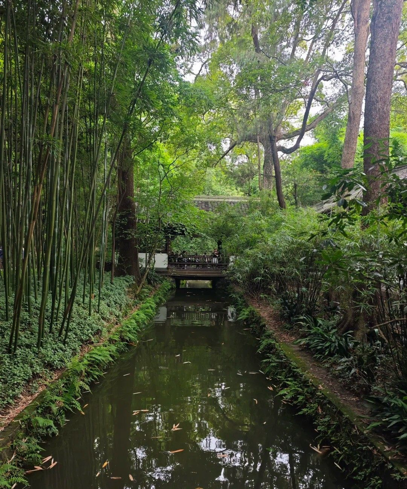
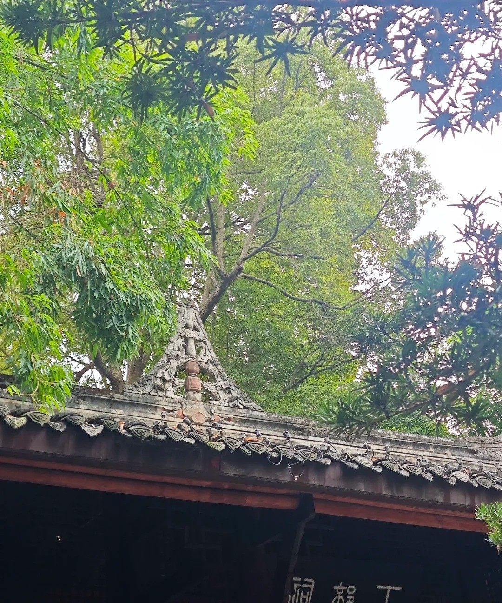
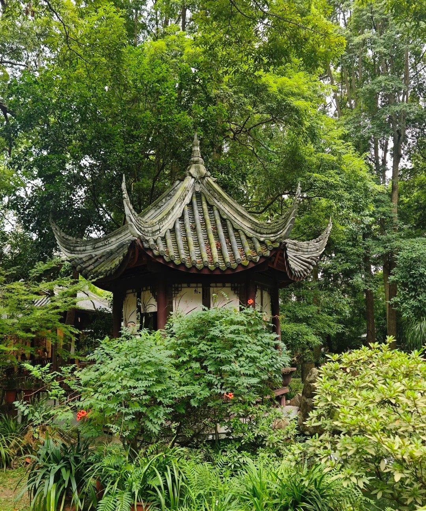

Dufu · 诗圣故居
茅屋为秋风所破歌之地，浣花溪水千年不息
安史之乱的烽烟中，杜甫辗转来到成都，在浣花溪畔结茅而居，四年间写下240余首诗篇——中国文学史最温暖的一页，就此展开。
Introduction
杜甫草堂坐落于成都西郊浣花溪畔，是诗圣杜甫流寓成都时的居所旧址。759年冬，杜甫避乱入蜀，次年春在亲友资助下营建草堂。居住期间，他写下《春夜喜雨》《茅屋为秋风所破歌》《绝句》等传世名篇，草堂也因此在后世成为历代文人雅士朝圣的「诗圣故里」。
杜甫在成都四年留下传世诗作240余首，占其现存全部诗作的六分之一。
1961年公布为第一批全国重点文物保护单位，文人圣地名副其实。
明清以来历经多次修葺，形成占地约300亩的古典园林，红墙竹影如画。
Deep Dive

位于园中部的茅屋故居，按唐代民居形制复原，竹篱柴扉、茅草覆顶，与千年前的朴素居所神似。正是在这样「床头屋漏无干处」的居所里，杜甫写下了「安得广厦千万间，大庇天下寒士俱欢颜」。茅屋是草堂的灵魂。

这三重主要殿宇构成草堂的「诗圣殿堂」：大廨内塑杜甫坐像，诗史堂以诗证史、陈列生平，工部祠正中供奉杜甫与陆游、黄庭坚塑像，「大雅堂」以彩绘展现杜甫诗境。

草堂依浣花溪而建，园内溪流蜿蜒、花木扶疏。杜甫《春夜喜雨》中「晓看红湿处，花重锦官城」的意境，在这里得到了最好的诠释——春天梅花与海棠盛开时尤为动人。
草堂位于青羊区青华路37号，紧邻浣花溪公园与四川省博物馆，适合与周边景点串联成半日文化之旅。
FAQ
Key Points
茅屋故居、诗史堂、大廨、工部祠、浣花祠、大雅堂。
约300亩古典园林，红墙竹影与千年银杏是经典机位。
比邻川博与浣花溪公园，可规划半日联游路线。
2-3小时最佳，雨天逢「春夜喜雨」别有风味。